Week 2 Writeup
Table of Contents
- 1. Defintions
- 2. Basic concepts
- 2.1. Lecture 1: Incident Response and Forensic Methods
- 2.2. Forensic Computing Principles:
- 2.3. IR Process
- 2.4. Investigation Cycle
- 2.5. Order of Volatility (RFC 3227)
- 2.6. Live Response for a Windows Machine
- 2.7. Memory
- 2.8. Lecture 2: Core Windows Forensics
- 2.9. Creating a Timeline
- 2.10. Data of Interest
- 2.11. Data Carving
- 3. FTK Imager Lab
- 4. Mayflower Lab
- 5. Tools and Conclusions
1 Defintions
- md
- message digest
- md5sum
- provides 16 byte signature
- IR
- incident response
- IR Process
- steps taken following an attack
- SIEM
- Security Incidence and Events Management
- Locord's Exchange Principle
- when any 2 objects come into contact, there is always a transference of material between the objects. You cannot interact with a live system without having some effect on it.
- Physical Memory
- short term memory (RAM)
- Regripper
- searches registry dump
- regedit
- Registry editor
- HKEY
- Handle to a Key
- Triage
- matching SSID of registry with MAC address of hardware.
- $MFT
- Master File Table that holds file creation and access time.
- MAC Time
- Modified, Access, and created time for files.
- Shellbag
- information about the opening of a window.
- Data carving
- recovering data stored in memory after "deleting" the files (e.g. removing "begin" and "end" flags that mark the data's position in memory).
- ARP
- Address Resolution Protocol
- Autorun
- common target for malware (malware can survive reboot when registered in autorun).
- MRU
- last used files.
- UserAssist
- user's search history.
2 Basic concepts
2.1 Lecture 1: Incident Response and Forensic Methods
Hash evidence disk and individual partitions before doing anything else.
2.2 Forensic Computing Principles:
- Minimize data loss.
- Record everything.
- Analyze all data collected as evidence.
- Report findings.
2.3 IR Process
Steps to take when responding to a possible security attack.
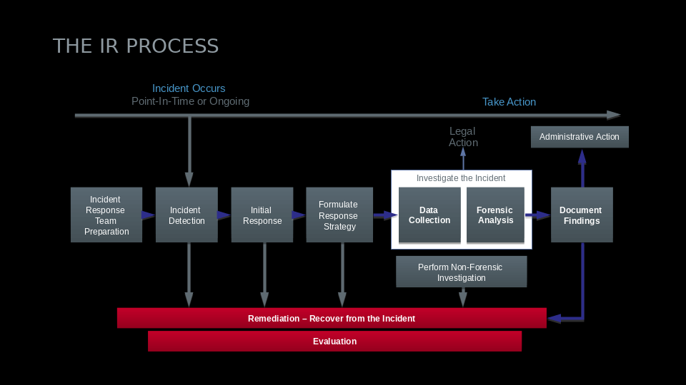
Figure 1: The Incident Response Cycle
2.4 Investigation Cycle
Steps to take on an affected machine to preserve evidence.
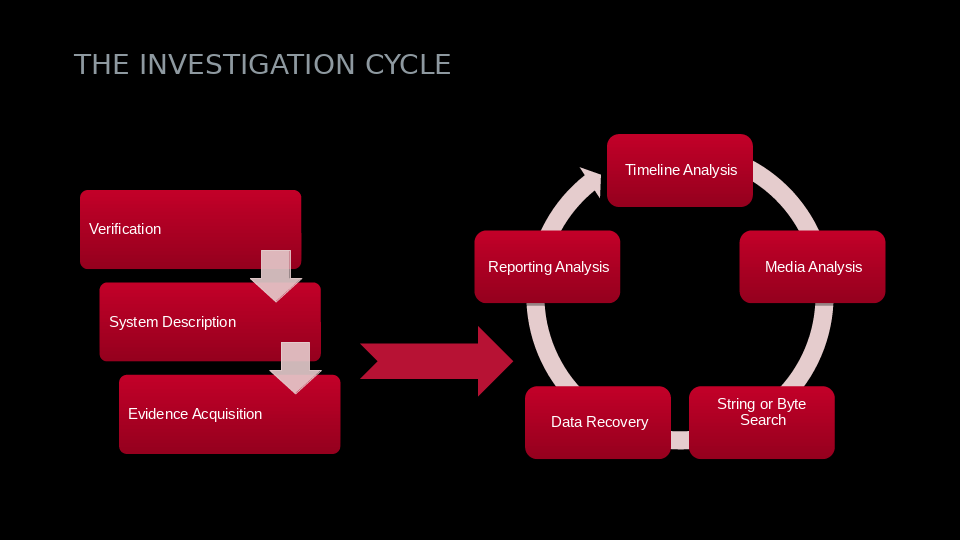
Figure 2: The Investigation Cycle
2.5 Order of Volatility (RFC 3227)
- When collecting evidence, always proceed from the most volatile to the least volatile.
2.5.1 Example Order of Volatility for a Windows Machine
- system memory (HIGH VOLATILITY)
- temporary file systems (e.g. swapfile, paging file)
- process table and network connections
- specific process information via memory dump
- network routing information and ARP cache
- forensics acquisition of disks
- remote logging and monitoring data
- physical configuration and network topology
- backups (LOW VOLATILITY)
2.6 Live Response for a Windows Machine
- obtain volatile data
- this includes all data that will be lost upon machine shutdown.
- obtain non-volatile data
- time and date stamps
- event logs
- web and application logs
- registry if applicable
- obtain relevant logical files
- unknown exectuables
- attacker tools
- any file relating to the incident that is left
2.7 Memory
2.7.1 Virtual Memory
- Every process in Windows is assigned a 4GB block of virtual memory, with 2GB alloted for the application and the remaining 2GB alloted for the system.
2.7.2 Physical Memory
- Divided into sections called "pages". Virtual memory is then allocated and mapped onto physical memory page by page.
- Each page of physical memory can appear at varying locations within the same address space, or in different address spaces entirely.
- To clear space, data can be moved from physical memory into a page file.
- When marked as free, memory does not get overwritten. This allows data carving to take place.
2.8 Lecture 2: Core Windows Forensics
The Windows registry has five common top-level directories (termed "hives"):
- HKEY_CLASSES_ROOT (HKCR)
- HKEY_CURRENT_USER (HKCU)
- HKEY_LOCAL_MACHINE (HKLM)
- HKEY_USERS (HKU)
- HKEY_CURRENT_CONFIG (HKCC)
Two less common root keys include the following:
- HKEY_PERFORMANCE_DATA
- HKEY_DYN_DATA
Only HKEY_USERS and HKEY_LOCAL_MACHINE are "real", the rest are shortcuts/aliases to branches within these two hives.
Each hive is made up of keys. Keys are made up of values and subkeys. Values identify items or values within a key that pertain to the operating system or application.
2.9 Creating a Timeline
- Volatility (timeline from memory dump).
- $MFT (file creation and access times from master file table).
- Reg-Ripper (data extraction from registry dump).
2.9.1 Volatility Timeline Creation for Windows Machine
timeliner HHoutput=body > time.txt shellbags HHoutput=body >> time.txt mftparser HHoutput=body >> time.txt mactime –b [time.txt] [Hd] > csv.txt
2.10 Data of Interest
- relevant files (e.g. pagefile.sys, index.dat, etc.)
- Windows event logs
- Application configuration files and logs.
- Prefetch folder (contains the last 128 run files.)
- Any evidence of malware or rootkits.
- If a VM is affected, any information of it's original state.
2.10.1 Practical File Example
- Event logs: generally useful with lots of information.
- e.g. application, system, security, DNS, etc.
- Network logs
- e.g. webserver, ftp/ssh, firewall (%windir%\pfirewall.log)
- Application logs
- Dr. Watson logs: application crash information
- setupapi.log: application installation information
- achedlgu.txt: scheduled task information
- Antivirus logs
2.11 Data Carving
"Deleting" files removes the BEGIN and END flags, but can leave the actual data in place in memory.
BEGIN END
| |
v v
+-----------------------------------------------------------+
|..............|..............| | |
|..............|..............| | |
|....data......|....data......| empty | empty |
|..............|..............| | |
|..............|..............| | |
+-----------------------------------------------------------+
Photorec: program that carves out files based on a header.
System Restore Points: malware can hide here and be "resurrected" if a given restore point is activated.
3 FTK Imager Lab
Don't install forensic tools on a target machine. This can easily leave an impact on the machine and affect forensics. Furthermore, store memory dump on external media or on a network share, not on a suspect's machine.
3.1 Volatility
volatility.exe -f memdump_sample1.mem imageinfo
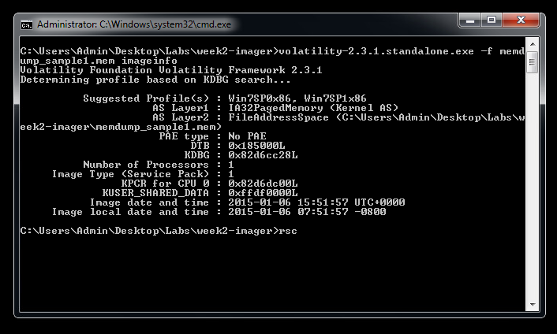
Figure 3: Getting Image Information from Sample Image with Volatility
3.1.1 Volatility Operations
volatility.exe -f memdump_sample1.mem --profile=Win7sP0x86 OPERATION
- psscan
- dllist -p PID
- netscan
- Deskscan
- Gitsids
volatility.exe -f memdump_sample1.mem --profile=Win7sP0x86 timeliner --output=body >> timeliner.txt
volatility.exe -f memdump_sample1.mem --profile=Win7sP0x86 mftparser --output=body >> mftparser.txt
3.1.2 Key Artifacts
- Registry (accessed with
regedit) - System Restore Points
- Pagefile sys
- Hibernation file
- Crash-dump file
- LNK files
- shell-bags (information about the opening of a window.)
- AutoRun
- MRU Lists
- UserAssist
- Geolocation (wired and wireless networks)
- USB devices
- Internet Explorer (typed urls)
4 Mayflower Lab
4.1 First Attempt
Mounted Image_USB_Mayflower.001 with OSFMount as drive F:\ (Fig. 4).
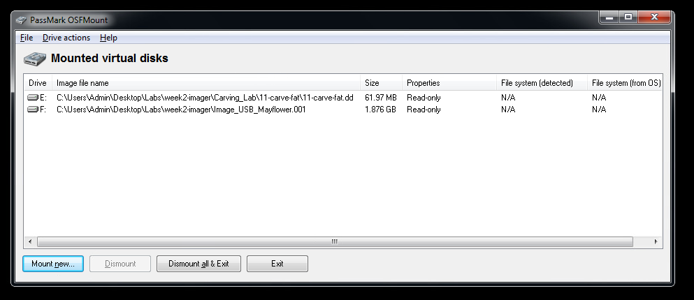
Figure 4: OSFMount Operation
Began data carving with Photorec at 15:32 PDT. Ended at 15:34 PDT. 26 files saved (cygdrive/c/Users/Admin/Desktop/Labs/lab2-imager/mount-mayflower) (Figs. 5 - 10).
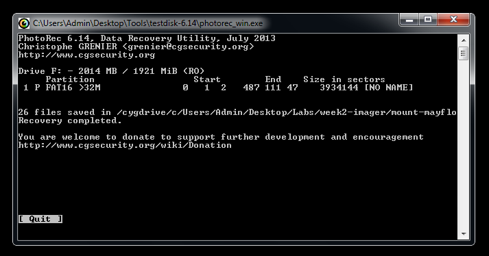
Figure 5: Photorec Operation
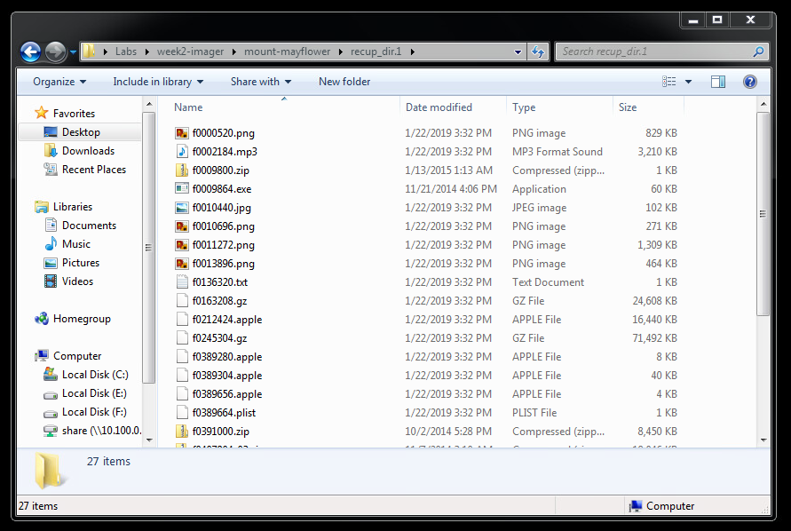
Figure 6: First Listing of Carved Files
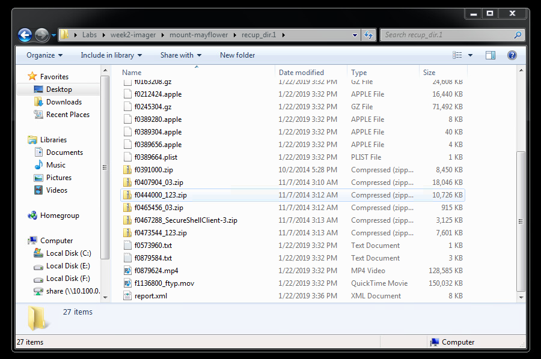
Figure 7: Second Listing of Carved Files
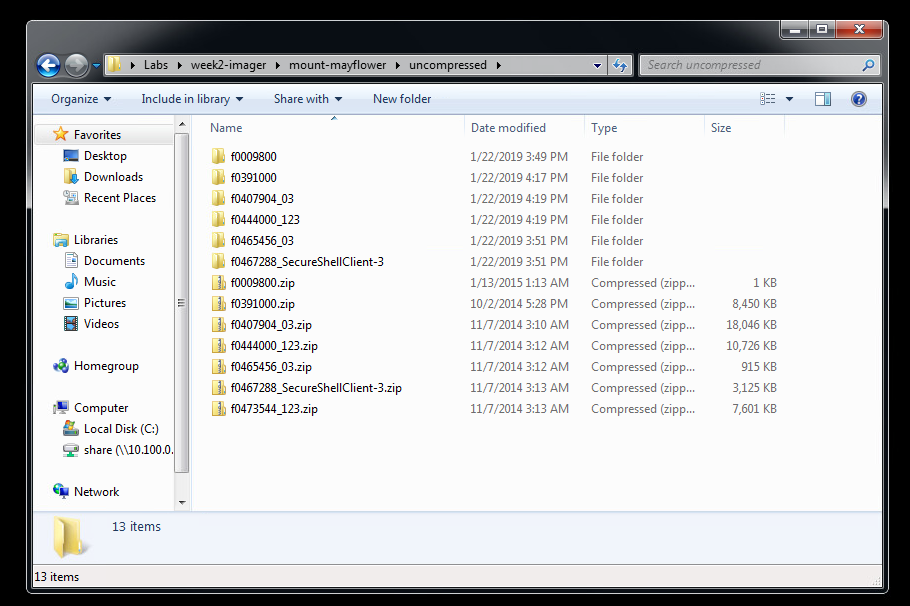
Figure 8: Uncompressed Folders
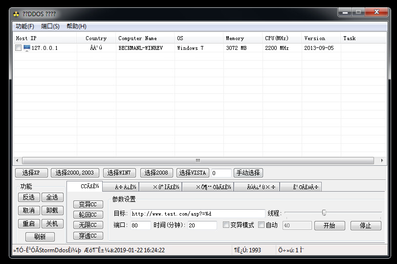
Figure 9: Possible DDoS Program
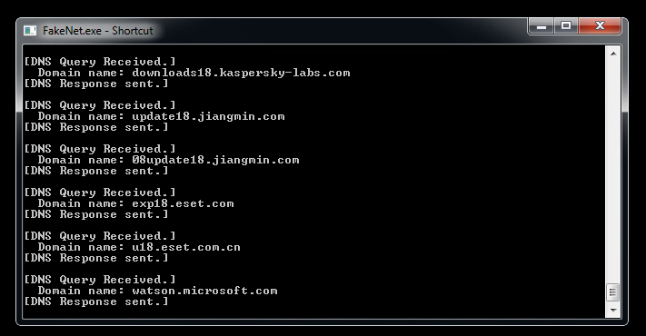
Figure 10: DNS Queries Found with FakeNet
4.2 Second Attempt
17:50 PDT: OSFMount: Partition 0, Mount as removable media (Figs. 11 - 12).
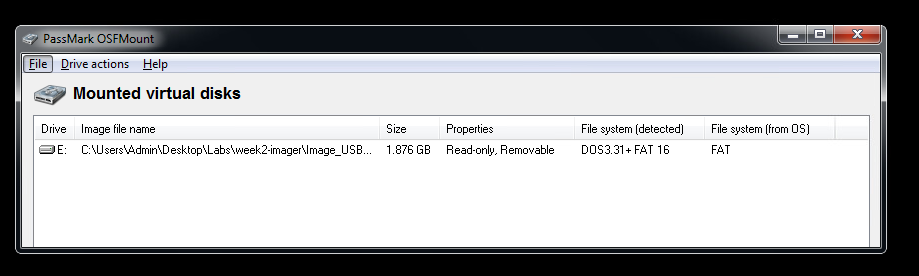
Figure 11: Mounting Mayflower Image as Removable Media (Partition 0)
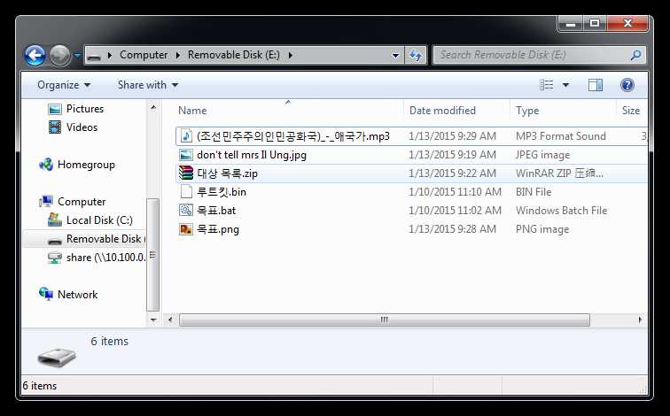
Figure 12: Mounted Mayflower Image under drive E:\
With the help of the File Insight program, the don't tell mrs Il Ung.jpg file was analyzed with the StringsAll plugin. The password for the encrypted CSV file was found to be "infected123!" (Fig. 13).

Figure 13: Retreiving the Password with File Insight
The CSV file had the names of at least two oil refineries as targets (Figs. 14 - 15):
- S-Oil Onsan Refinery
- GS Caltex Yeoso Refinery
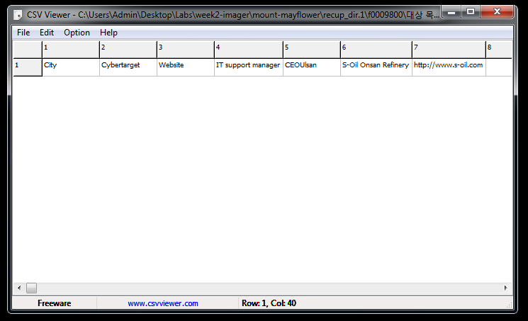
Figure 14: CSV Values of Unencrypted File
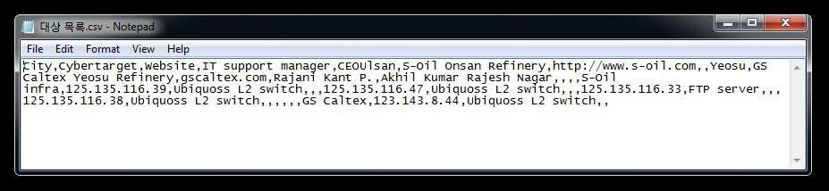
Figure 15: Formatted CSV Values of Unencrypted File
5 Tools and Conclusions
- What is/are the cyber-target(s) found on the USB stick?
- S-Oil Onsan Refinery
- GS Caltex Yeoso Refinery
Investigate possible malware and describe the working.
A possible malware includes a C++ file named
ReadPSW.cppand an executable namesReadPSW.exewhich appears to attempt to read passwords of all users logged into the current machine (Figs. 16 - 17). It is possible that the exetuable calls the C++ file which then carries out the attack. Further investigation into this vector is recommended.
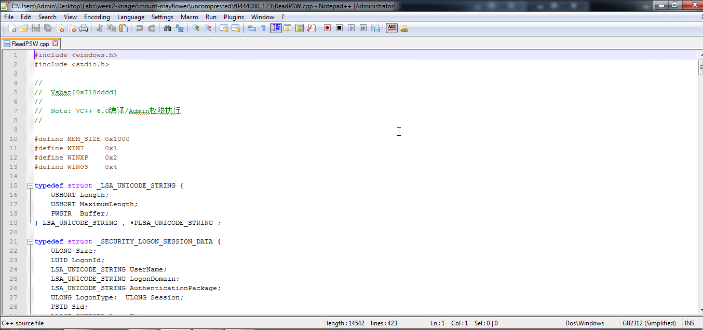
Figure 16: Password Reader Malware C++ File
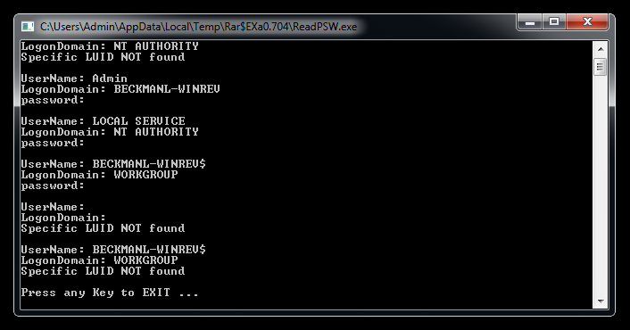
Figure 17: Password Reader Malware Executable
Display the list of usernames/passwords.
password: infected123!
What was the offset-value you find them at?
offset: 0x000003B0
Which relevant files were deleted and can you replicate them?
Four executables were found to delete themselves when run. They include:
- 3ver.exe
- 4ver.exe
- 6ver.exe
- 7ver.exe
It is as yet unknown if they can be restored following deletion. Though they can be restored by remounting the Mayflower image under a new directory.
What stratedgy would you advise to the target(s)?
Listed in the unencrypted CVS file were the IP addresses and types of switches (e.g. Ubiquoss L2 switch), as well as the names of several IT support managers. As a precaution, I would advise the oil refineries to update their network devices and software infrastructure to minimize the chance of a security breach. I would consider all devices and computers within their networks as compromised until a full security audit can take place.